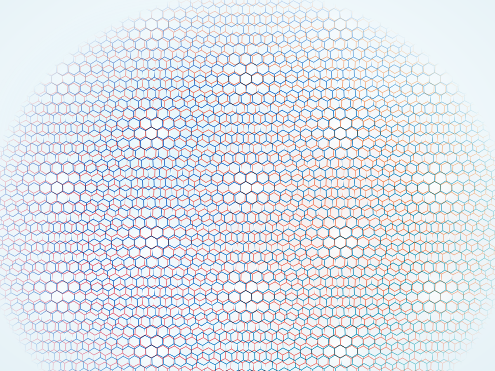

01
RESEARCH AREA
Quantum materials
Explore excitonic states, polaronic effects, and correlated phases in 2D materials, van der Waals heterostructures, and moiré superlattices. Use steady-state and ultrafast spectroscopy to uncover their formation, dynamics, and tunability.
- Moiré excitons and polarons
- Correlated quantum states
- Cavity-coupled superlattices
- Ultrafast optical response
